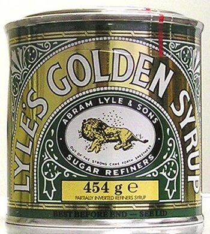

Thursday, June the 21st, 2007
back to: title, date or indexes
I have been giving further thought to that logo—or brand—for the 2012 Olympics. Clearly the £400,000 design is a hideous mistake and will have to be ditched and replaced at some point within the next five years. My own view is that the organising committee ought to take a cheerful, jolly image from an already proven successful brand, slap the Olympic rings on it somewhere, and have done with it. What could be better than a picture of a lion being attacked by a swarm of Africanised killer bees?
